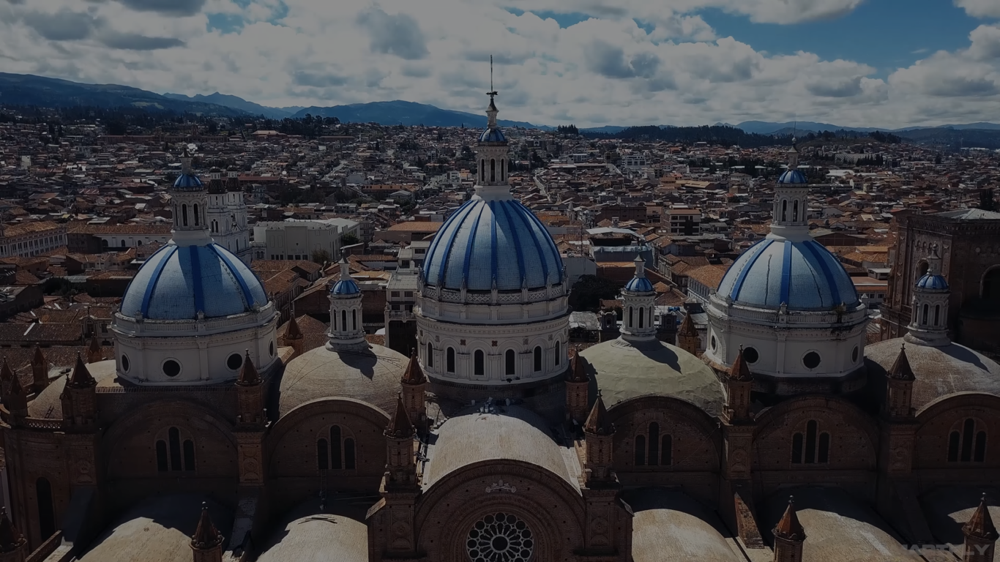

El Parque de El Paraíso ubicado en el área de Gapal, junto a las sedes de las Facultades de Ciencias Médicas y Odontología de la Universidad de Cuenca, es sin duda el parque atractivo más grande de Cuenca.
Pico de Pescado es un sendero mixto de diamante negro menos popular de 3 km ubicado cerca de Cuenca. Este sendero principal para bicicleta de montaña solo se puede usar cuesta abajo y tiene una calificación física general dura con una subida de diamante negro.
El puente roto es uno de los lugares turisticos de Cuenca en la provincia de Azuay, construido entre 1840 y 1850 por Juan de la Cruz Pigara, esta gran estructura arquitectónica enlazaba la Cuenca Histórica con la parte baja de la ciudad.
El Museo, Teatro y Parque Ancestral Pumapungo – Ministerio de Cultura y Patrimonio del Ecuador, son espacios abiertos a todo tipo de iniciativas, proyectos y actividades culturales.
"Describenos tu lugar favorito y compartelo con nosotros."

Guias
"Conoce toda la información de como acceder a los lugares más hermosos."
Parque el paraiso
El Parque de El Paraíso ubicado en el área de Gapal, junto a las sedes de las Facultades de Ciencias Médicas y Odontología de la Universidad de Cuenca, es sin duda el parque atractivo más grande de Cuenca.
Pico de pescado
Pico de Pescado es un sendero mixto de diamante negro menos popular de 3 km ubicado cerca de Cuenca. Este sendero principal para bicicleta de montaña solo se puede usar cuesta abajo y tiene una calificación física general dura con una subida de diamante negro.
Puente roto
El puente roto es uno de los lugares turisticos de Cuenca en la provincia de Azuay, construido entre 1840 y 1850 por Juan de la Cruz Pigara, esta gran estructura arquitectónica enlazaba la Cuenca Histórica con la parte baja de la ciudad.
Museo Pumapungo
El Museo, Teatro y Parque Ancestral Pumapungo – Ministerio de Cultura y Patrimonio del Ecuador, son espacios abiertos a todo tipo de iniciativas, proyectos y actividades culturales.